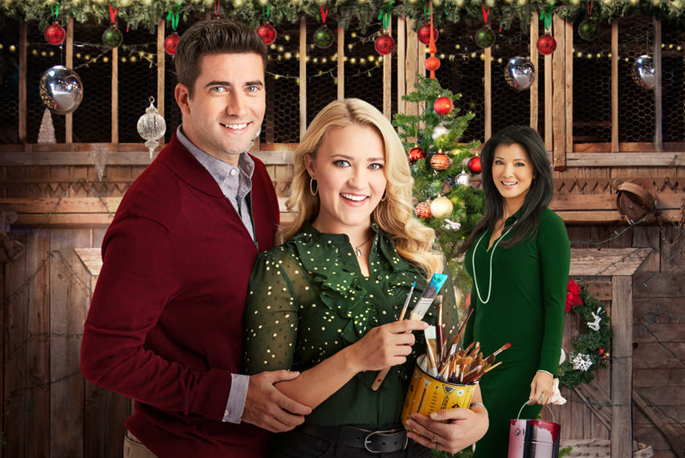
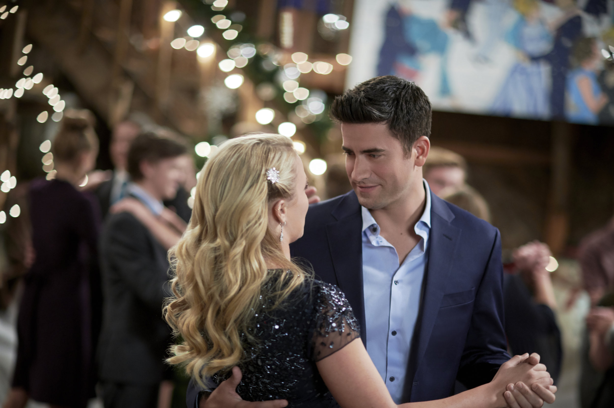

CHRISTMAS WONDERLAND
| Titre québécois | Le bal de Noël |
| Réalisation | Sean Olsen |
| Acteurs principaux | Emily Osment Ryan Rottman |
| Société de production | Hallmark Movies & Mysteries |
| Sortie | 2018 |

/5 étoiles


Jessica Ehlers | le 24 novembre 2021
Le film CHRISTMAS WONDERLAND, produit par Hallmark et maintenant diffusé sur Netflix, nous rappelle que toutes les comédies romantiques de Noël ne valent peut-être pas la peine d’être regardées. Faute d’un moment magique et de l’alchimie, ce film réalisé vous décevra.
Heidi (Emily Osment) est une conservatrice de galerie d’art qui ambitionne de devenir peintre à New York. Heidi retourne à sa ville natale, Pleasant Valley, pour garder ses neveux et rencontre son amour de l’adolescence, Chris (Ryan Rottman), un enseignant à l’école secondaire. Pourtant, alors qu’elle ravive cette ancienne romance avec Chris, elle doit décider entre sa carrière à New York ou une chance d’être heureux et en amour.
Les acteurs du film posent pour une photo promotionnelle. De gauche à droite : Ryan Rottman, Emily Osment, Kelly Hu.
La comédie romantique CHRISTMAS WONDERLAND est peu mémorable. Le film ne contient pas le moment envoûtant qui rend une comédie romantique géniale. Dans certains films, le prince voit la fille moyenne vêtue d’une belle robe de bal pendant qu’elle descend les escaliers. Dans d’autres, l’homme arrive à l’aéroport pour avouer son amour. Quoi qu’il en soit, ce type de moment provoque la joie. Il est la raison pour laquelle on veut regarder un film plusieurs fois. Malheureusement, il manque de ce film de Noël.
Le réalisateur, Sean Olsen, essaie de créer ce moment magique, mais il ne répond pas aux attentes. Lorsque Heidi revient de New York à la dernière minute pour assister au bal d’hiver Chris, on s’attendait une sorte de geste romantique enchanteur. Au lieu de cela, les deux amoureux commencent à danser maladroitement. Je ne qualifierais certainement pas cette partie du film de magique.
Heidi et Chris danse au bal de Neige.
Ce film est aussi décevant parce que les amoureux n’ont aucune alchimie. Il semblait qu’ils étaient plus frère et sœur que des âmes sœurs. Je pense que cette incompatibilité est la faute de la distribution des rôles. Ryan Rottman était un choix terrible pour le rôle de l’amoureux Chris. Il n’a pas donné l’impression de se soucier vraiment d’Heidi pendant toute la durée du film.
Pour cette raison, je ne recommande pas CHRISTMAS WONDERLAND pour votre prochaine soirée de comédie romantique. Hallmark a créé d’autres films merveilleux pour la saison de Noël, mais malheureusement, ceci n’en est pas un. Si vous voulez regarder une comédie romantique cette saison de Noël, je vous suggère de trouver un autre film.
Si vous voulez plus d'information, cliquez ici pour accéder le site web officiel de Christmas Wonderland.
Voulez-vous lire d’autres critiques de films ? Cliquez ici pour voir les critiques d’autres comédies romantiques de Noël.